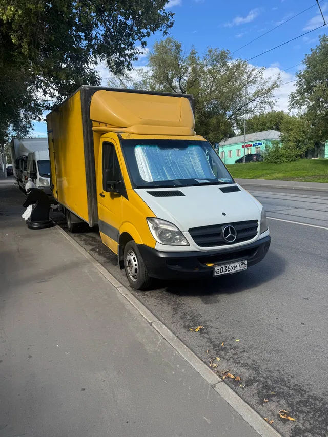
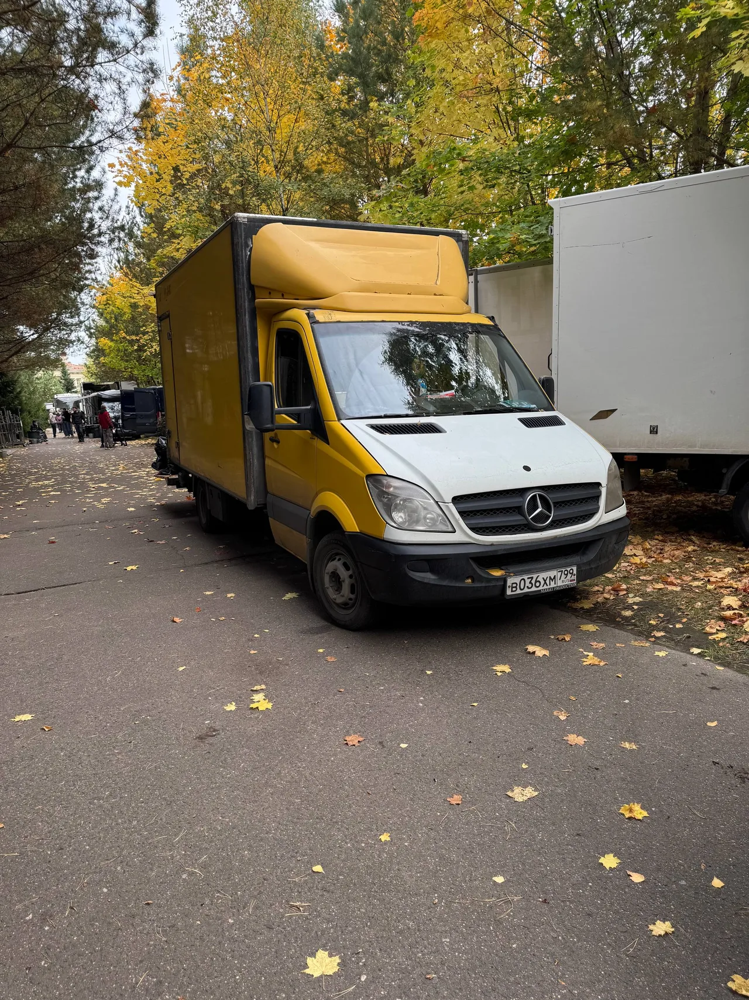

Реквизит
на вашей точке.
Соберём по согласованным адресам и привезём на площадку. После смены - возврат или следующий съёмочный день.
МОСКВА И ВЫЕЗДЫ / ДЛЯ ХУДОЖЕСТВЕННОГО ЦЕХА
Привезём реквизит и материалы.
На площадке кузов станет рабочей базой вашего цеха.
Марат сам за рулём. Помощь руками - по договорённости.
14 000 ₽ / 12 рабочих часов машина + водитель

ЭТО НАША МАШИНАСоберём по согласованным адресам и привезём на площадку. После смены - возврат или следующий съёмочный день.
Кузов со стеллажами для материалов и реквизита. Задняя погрузка и гидроборт; комплект обсудим под задачу.
Владелец и водитель в одном лице. Можно отдельно договориться о сборке, обшивке и помощи руками.
Иллюстрация идеи.
Настоящая машина - ниже.
ХУДВАГЕН В ДЕЛЕ
Марат за рулём. Жёлтый Sprinter на точке. Дальше начинается работа художественного цеха.
Марат за рулём. Жёлтый Sprinter на точке. Дальше начинается работа художественного цеха.
Внутри - стеллажи, материалы и рабочая организация. Комплект собираем под вашу задачу.
Задняя погрузка и гидроборт. Размеры, вес и помощь при погрузке согласуем заранее.
Машина и человек, который может подключиться к работе руками. Объём помощи обсуждаем отдельно.
ЗА КАДРОМ. ЗАТО В ДЕЛЕ.
Реквизит, материалы, конструкции. Подготовка, точка, возврат. Худваген входит в ритм проекта вместе с командой.
ДЕНЬ СЪЁМКИ НАЧИНАЕТСЯ РАНЬШЕ
Строймагазины и рынки. Список, бюджет и участие Марата обсуждаем заранее.
Забираем материалы и реквизит по согласованным адресам Москвы.
Приезжаем на точку. Сверяем доступ и место для рабочей базы.
Материалы и рабочее пространство рядом. Помощь руками - по договорённости.
Обратный вывоз или следующий съёмочный день по плану команды.
БЕЗ ДЕКОРАЦИЙ / НАСТОЯЩАЯ МАШИНА
Mercedes Sprinter.
Жёлтый кузов, задняя погрузка, гидроборт. За рулём и на связи - сам Марат.
ПОЛЕВЫЕ ЗАПИСКИ / TELEGRAM
Марат показывает работу изнутри. @Art_mmm_mmm

КОРОТКО О ДЕЛЕ
Одна машина с владельцем-водителем для художественного цеха. Даты, маршрут, груз и комплект сверяем перед выездом.
Бензин для генератора оплачивается отдельно. Мощность и доступность комплекта уточняются. Итоговые условия, километраж и участие в работах согласуются с Маратом. Работа по договору и актам через ИП.
Согласованную сборку, деревянные каркасы и подиумы, обшивку тканью или пластиком. Объём помощи, время и оплату определяем отдельно под задачу.
Ориентир по данным владельца: 4,2 × 2,2 × 2,2 м. Точные размеры, допустимый вес и возможность перевозки конкретного груза нужно проверить с Маратом до заказа.
Да, можно обсудить проект на 2-3 месяца. Свободные даты и условия участия Марат подтвердит лично.
ПРОДАКШЕНУ НУЖЕН СВОЙ ЧЕЛОВЕК
Расскажите про даты, локацию и задачу. Марат ответит лично и сориентирует по машине и участию в проекте.